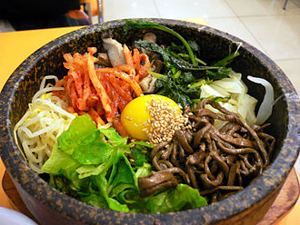

石鍋拌飯
ch03-4

韓式拌飯是韓國料理書《是議全書》（시의전서）中最具代表性的美食，在食譜上的名稱為「부븸밥」（Bubuimbap）。
韓式拌飯的起源有很多說法，主要如下：
一.說為媳婦飯，主要是因為早期韓國媳婦地位較低下，韓國媳婦不能與公公、婆婆、先生同桌吃飯，有時僅能利用剩下的飯菜填飽肚子，因此韓式拌飯便是在這種背景下產生的餐點。
二.是韓國平民百姓將剩菜放進飯裡，加一些辣椒醬拌著吃，天冷便用石鍋熱著。
三.是因為國王勤政愛民，不喜歡吃水溂間準備的精緻菜餚，於是要廚師把菜全部倒入碗裡拌勻，就是現在的韓式拌飯。
另有其他說法，在朝鮮時代以韓式拌飯作為向中國進貢的高級菜餚，由於深受皇帝喜愛，自此就聲名遠播。
但無論何種推測，現代韓國拌飯還多了一層愛情詮釋的表徵，通常都由男孩先將飯拌好，再讓女友享用；如果女孩吃不
完，男孩要將剩下的拌飯全部吃完，表示對女孩的重視與體貼。韓式拌飯和上海的菜飯有類似的由來：很久以前，上海
人把剩菜剩飯拌在一塊吃，就成了後來的菜飯。而韓國人每餐必備的涼拌菜，也是吃不完，但節省的韓國人又捨不得丟
，就留著和剩飯一起加熱，再拌上好吃的醬料，就成了新的一餐。
這是我的首頁
石鍋拌飯
人蔘雞湯
辣炒年糕